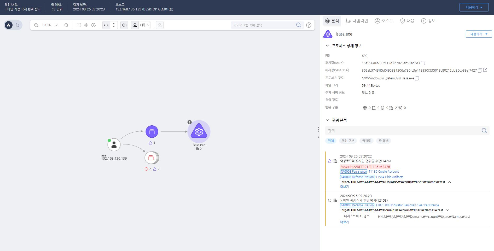

T1070.009.01 Clear Persistence
D3FEND
MITRE ATT&CK 액션을 기준으로 대응 방안을 작성
Detection
계정 정보 관련 레지스트리 키를 모니터링하여 "SAM\SAM\Domains\Account\Users\Names" 하위의 레지스트리 키를 삭제하는 행위를 탐지합니다.
Detection(EDR)

Response
공격자에 의해 PC가 제어되었을 가능성이 있으므로 호스트 네트워크를 격리합니다.
Mitigations
시스템 및 보안 로그 무결성 모니터링 (M1047 - System Logging & Monitoring)
- 시스템 로그 및 보안 로그 무결성을 모니터링하고 로그 파일의 삭제 및 변경을 추적
- 로그 파일 보호를 통해 공격자가 로그 파일을 삭제하거나 수정하지 못하도록 설정
- 로그 무결성 검사 도구(예: Sysmon)를 사용하여 로그 변경 및 파일 수정을 추적하고 알림을 설정
파일 무결성 모니터링 및 변경 탐지 (M1047 - System Logging & Monitoring)
- 파일 무결성 모니터링(FIM)을 설정하여 중요 시스템 파일 및 구성 파일의 변조 여부를 탐지
- 파일 삭제, 이동, 수정과 같은 시스템 변화를 실시간으로 감지하여 비정상적인 활동을 알림
- 시스템 변경 사항에 대한 경고를 설정하고, 파일 시스템의 이상 징후를 빠르게 탐지
자동화된 보안 감사 및 경고 시스템 (M1040 - Behavior-Based Detection)
- 보안 감사 시스템을 사용하여 시스템 정리와 관련된 행위 기반 탐지를 설정
- 악성 코드 활동이나 비정상적인 명령어 실행을 탐지하여 경고를 발생시키고 대응
- 자동화된 경고 시스템을 사용하여 시스템에서 정리 작업을 수행하는 과정을 실시간으로 추적
침해 탐지 및 대응 시스템 (M1047 - System Logging & Monitoring)
- 침해 탐지 시스템(IDS/IPS)을 설정하여 시스템 정리 작업에 의해 발생하는 비정상적인 활동을 감지
- 네트워크 및 시스템의 비정상적인 행위를 실시간으로 모니터링하고, 공격자가 시스템을 정리하려는 시도를 즉시 경고
- 네트워크 침입 탐지 시스템(NIDS)을 활성화하여 시스템 정리 및 데이터 삭제와 같은 의심스러운 행동을 추적
정기적인 백업 및 파일 복원 (M1029 - Data Backup)
- 시스템 및 중요 파일의 주기적인 백업을 수행하여 시스템 정리 후 데이터를 복원할 수 있도록 설정
- 백업 파일의 무결성 검사와 백업 복원 테스트를 주기적으로 수행하여 파일 손상이나 삭제 후 복구 가능성을 유지
- 암호화된 백업 시스템을 사용하여 백업 데이터를 안전하게 보호하고, 파일 손상 및 삭제 방지
사용자 계정 및 권한 관리 강화 (M1035 - Access Control)
- 불필요한 계정이나 불법적인 접근을 제한하여 공격자가 시스템 정리 작업을 수행하는 경로를 차단
- 최소 권한 원칙을 적용하여 시스템 관리자 권한을 최소화하고, 불필요한 권한 상승을 방지
- 정기적인 사용자 계정 및 권한 점검을 통해 권한 부여를 적절히 관리하고, 불법적인 사용자를 차단
시스템 클린징 방지 도구 사용 (M1038 - Execution Prevention)
- 시스템 청소 도구(예: 악성 코드 제거 도구)의 사용을 제한하고, 공격자가 시스템 정리 도구를 악용하지 못하도록 방지
- 운영 체제 보호 모드를 활성화하여 비정상적인 시스템 정리 작업을 방지
- 신뢰할 수 있는 실행만 허용하는 정책을 적용하여 불법적인 도구나 소프트웨어가 시스템에서 실행되지 않도록 차단
보안 정책 및 사용자 교육 강화 (M1019 - Awareness and Training)
- 시스템 정리와 관련된 보안 정책을 강력히 설정하여 정리 작업이 반드시 필요한 경우에만 수행되도록 제한
- 직원 및 관리자의 보안 교육을 통해 시스템 정리 및 악성 활동을 인지하고 이를 적절하게 대응할 수 있도록 지원
- 시스템 로그 분석 및 보안 점검의 중요성을 강조하여 보안팀이 정기적으로 시스템을 점검하고 모니터링하도록 유도
Affected Techniques
Action 실행시 함께 영향을 받는 다른 Techniqes
| ATT&CK |
| T1531.000 |
| T1640.000 |
| T1059.001 |
| D3FEND |
| D3-FIM File Integrity Monitoring |
| D3-SCA System Call Analysis |
| D3-PM Platform Monitoring |